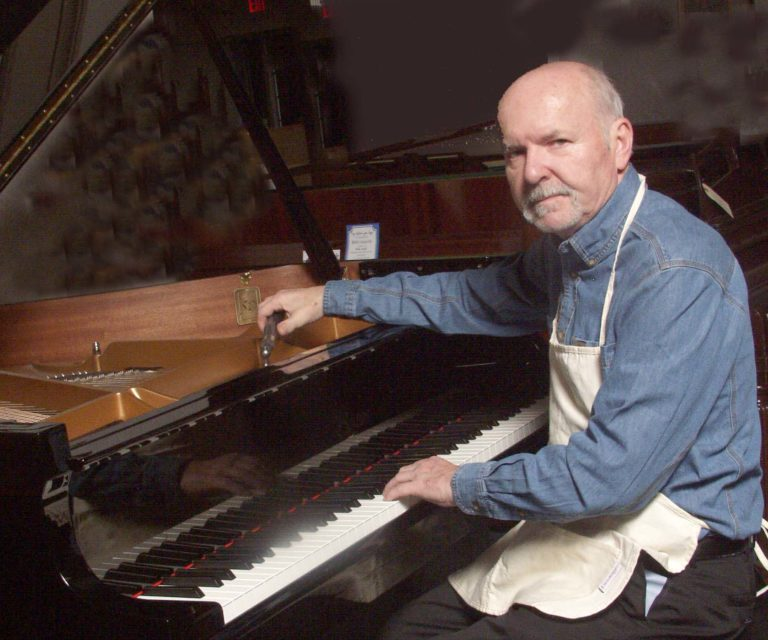
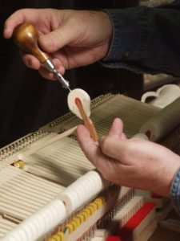

Services
Piano Tuning
When a piano is tuned, the strings are tightened until the wire strings are in tune with each other. There are also a number of moving parts which work together so the hammers will strike the strings properly and effectively. These parts may also need adjustment in order for the keys to play smoothly and perform according to factory specifications. This is called regulation.
Voicing
Hammer voicing is almost as import as tuning. The hammer is the felt object which strikes the string to produce a tome. Depending on the condition of the piano, the piano may sound too loud, too bright and too harsh. Another hammer issue can be unevenness from one not to the next. This happens because most players play certain notes more than others The more often played notes get louder than the ones less often played.
The rememdy for this situation is called hammer voicing. It is done by filing off a layer of the hammer or altering the density of the hammer with a voicing tool. Voicing is relatively inexpensive or in some cases minor voicing is included with the price of the tuning.
As a pianist of both classical and popular music, I have a hands-on understanding of the variable tones which can be created and improved upon.
Piano Repair and Restoration
Pianos sometimes need repair of broken or worn out parts. Estimates on repair are throughly expained and discussed with the customer before the work begins.